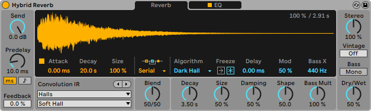
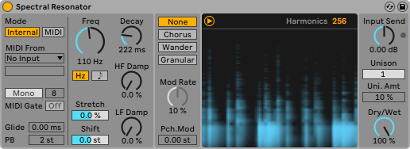
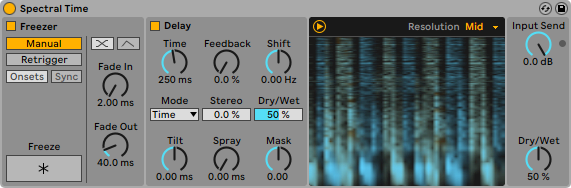

- Live
- Push
- Link
- Shop
- Packs
- Help
- Try Live for Free
- Log in or register
- More on Ableton.com:
- Blog
- Ableton for the classroom
- Ableton for Colleges and Universities
- Certified Training
- About Ableton
- Jobs
What's New in Live 11
Try Live 11 free for 90 days >
The Live 11 Suite trial includes all the features of the full version, including saving and exporting. You can use it alongside your current version of Live.
Explore the features in Live 11:
Create your perfect take
Artist records and edits multiple takes of her voice and a MIDI keyboard using comping
Take recording and comping
Live organizes multiple passes of an audio or MIDI performance into individual takes. Pick the best moments of each performance and combine them to create your perfect take. Or approach sound design in a new way by splicing together random samples from your library.
Linked-Track Editing
Link two or more tracks to edit their content simultaneously. This makes editing multi-tracked instruments or performances with multiple musicians easy and fast whilst keeping everything in time across tracks. This feature also works for MIDI tracks.
Add more feeling to your music
Artist demonstrates MPE using a Roli Seaboard, Push and Live 11’s new Note Expression View
Use your MPE-capable controller
Plug in your MPE-capable controller and immediately add bends, slides and pressure for each individual note in a chord. Add subtle expression variations, morph between chords and create evolving sonic textures.
What is MPE?
MPE stands for MIDI Polyphonic Expression. This way of using MIDI allows MPE-capable devices to control multiple parameters of every note in real time for more expressive instrumental performances.
Experiment with new devices
Hybrid Reverb
Hybrid Reverb combines convolution and algorithmic reverbs. Place your sounds in any space, from accurate real-life environments to those that defy physical reality. Use the algorithmic side to add control and modulate the reverb tail, run it in parallel or in series with the convolution side, or play Hybrid Reverb like an instrument for real-time sound design.
Spectral Resonator
Breaks the spectrum of an incoming audio signal into partials, then stretches, shifts and blurs the result by a frequency or a note in subtle or radical ways. The MIDI sidechain input also allows musicians to process material in key and even play the device as if it were a polyphonic instrument.
Spectral Time
Transforms sound into partials and feeds them into a frequency-based delay, resulting in metallic echoes, frequency-shifted and reverb-like effects. The Freeze function captures and holds a slice of audio – either free-running or in time with the beat – for stuttered, glitched and washed-out effects.
PitchLoop89
Create jittery glitch effects, delayed digital shimmers and outlandish vibrato with this Max for Live pitch shifting device created in collaboration with Robert Henke and inspired by the Publison DHM 89 – an early digital effects processor. It’s a flexible tool to add character to sounds in the studio, or for in-the-moment experimentation onstage.
Inspired by Nature
Six playful instruments and effects created in collaboration with Dillon Bastan that use natural and physical processes as their inspiration.
Vector FM – Manipulate different combinations of FM oscillators represented by moving particles – play with movement and voices to create evolving modulations and textures.
Vector Grain – A granular looper that visualizes sound modulation by moving particles on the interface – play with attraction and magnetism or loop the particles through a flow field
Vector Delay – Each visualized particle in this multitap delay device represents a different delay line – create pitch shifting or reverse delay effects with movement controlled by physical forces.
Emit – This visual granular synthesizer uses particles shooting across a spectrogram to show the grain of a sample being played, while vertical movements represent filtering and panning.
Tree Tone – Grow different fractal patterns inspired by plants, then use them as resonators for internally generated noise or incoming audio.
Bouncy Notes – Bounce balls up and down a piano roll to create pitch shifting delay effects or arpeggiation with this gravity-based MIDI sequencer.
Do more on stage
A producer and drummer duo show tempo following and Macro improvements in action
Tempo Following
Live listens to and adjusts its tempo based on incoming audio in real time, making it a dynamic part of the band instead of the tempo source that everyone has to follow. When you DJ, you can even turn Live into a tempo-synced FX box.
Macro Variations
Store the state of your Macros for later recall – perfect for creating instant variations to your sounds or builds and drops during performance.
Rack improvements
Configure your Racks to have between 1 and 16 Macros. Randomize the state of your Macros with the randomization button. Map this control to MIDI and perform drastic changes in real time to surprise your audience and yourself.
Be Unpredictable
Note chance
Set the probability that a note or drum hit will occur and let Live generate surprising variations to your patterns that change over time.
Velocity chance
Define ranges for velocity probability for subtle, humanized variations in the dynamics of your patterns.
Do more with Follow Actions
Follow Actions can now be linked to the clip length, making it faster to create interesting sequences of clips. Scene Follow Actions let you create evolving arrangements. You can also set Follow Actions to jump to specific clips and enable and disable Follow Actions globally.
Work with new sounds
New Instruments
Created in collaboration with Spitfire Audio, these three Instrument Packs bring the dynamic chamber ensemble textures to any production.
Upright Piano
Upright Piano infuses your productions with the natural warmth of an upright piano. Close-recorded for an intimate feel, this classic sound is at home in many styles of music – whether it’s used at its purest in a folk song or transformed in an electronic track.
Brass Quartet
Feature a rich blend of trumpet, flugelhorn, tenor horn and trombone in your music. The instrument highlights the natural breathiness, range of expression and broad tonality of this brass quartet’s instrumentation.
String Quartet
From delicate pizzicato droplets to full, vibrant layers, get the authentic timbres and textures of a string quartet. This combination of two violins, viola and cello has a sound that is immediately intimate, and is also a great starting point for sonic exploration.
New Curated Collections
These Packs capture the musical threads that tie evolving styles and scenes together. Each is a curated selection of instruments, clips and samples that share a common sonic theme.
Voice Box
Voice Box invites you to get inventive with vocals. This Pack features a comprehensive collection of contemporary vocal samples from multiple voices, a set of playable vocal instruments, and Effect Racks designed for vocal processing
Mood Reel
Set the scene with a collection of sounds for making music with a modern narrative feel. Evocative layered instruments combine organic and synthetic sounds with textural elements to add mood, space and movement to productions.
Drone Lab
Drone Lab is a place of sustain. Weave complex, evolving threads through your productions with tonal and textural samples, generative noise, multisampled instruments, plus devices and Effect Racks designed for experimentation.